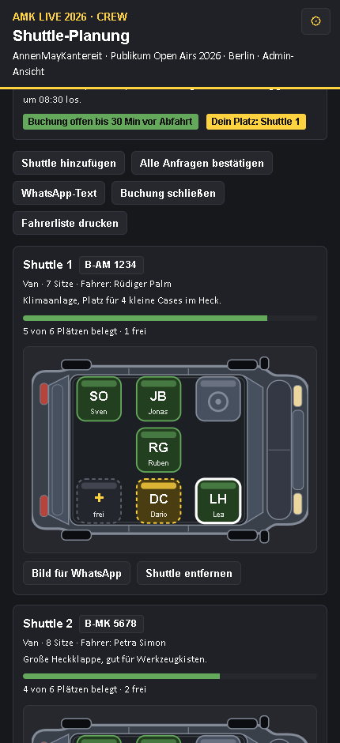
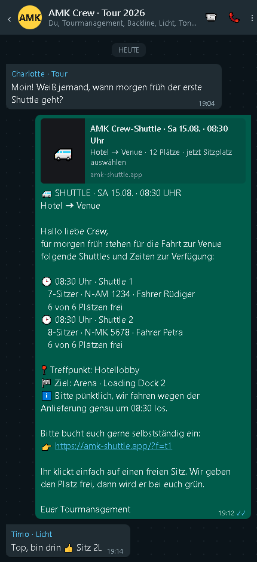
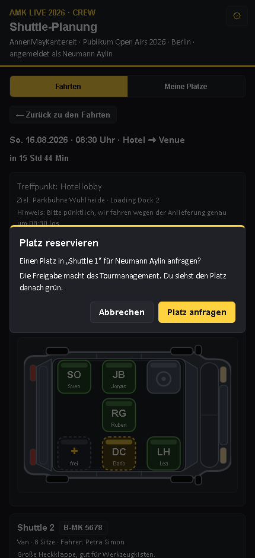
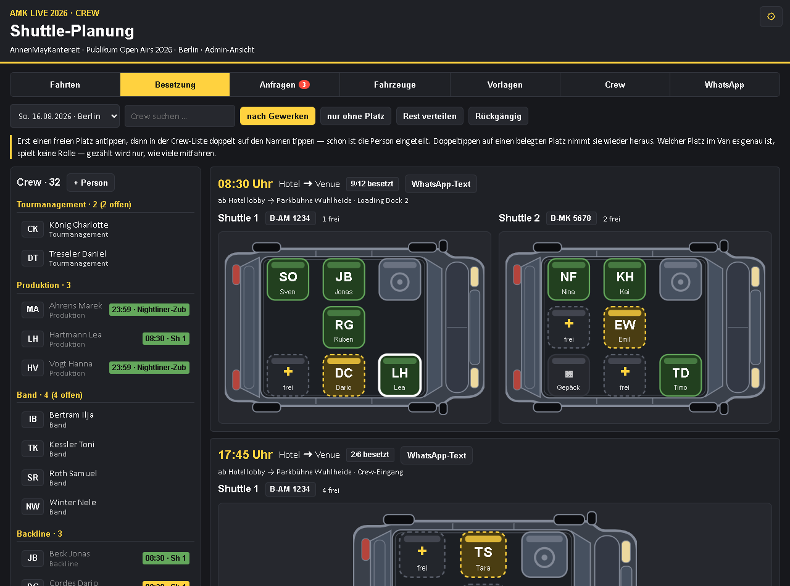
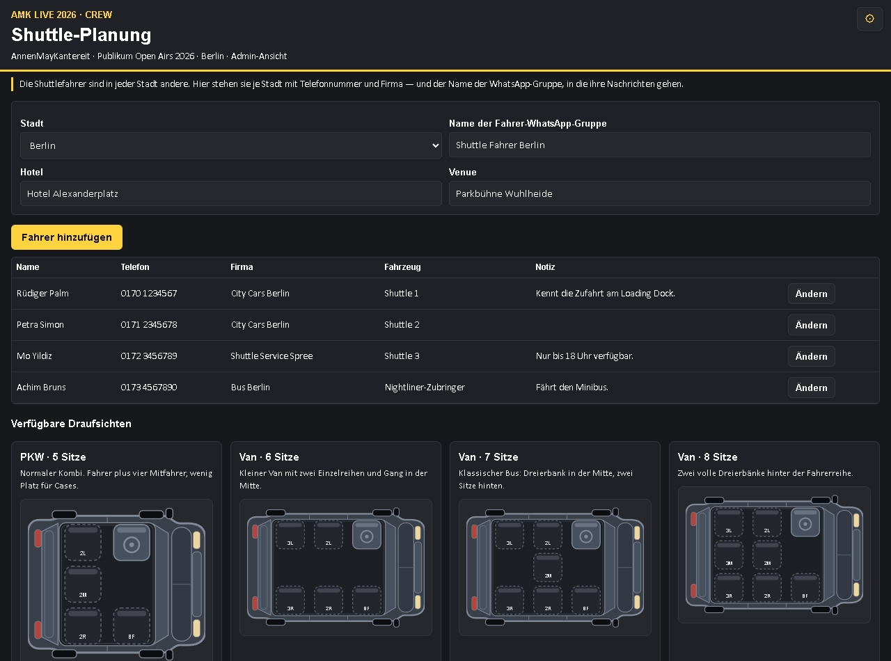
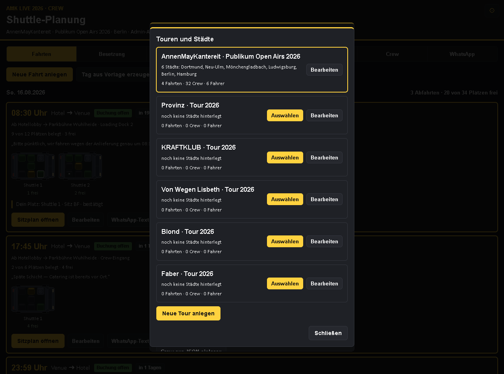
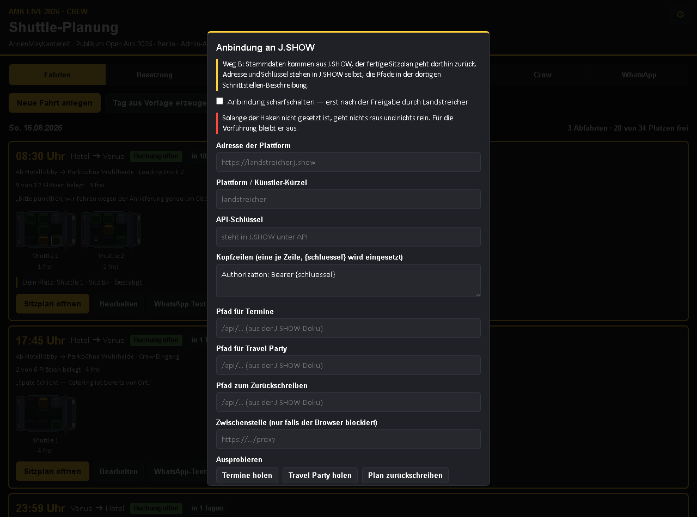
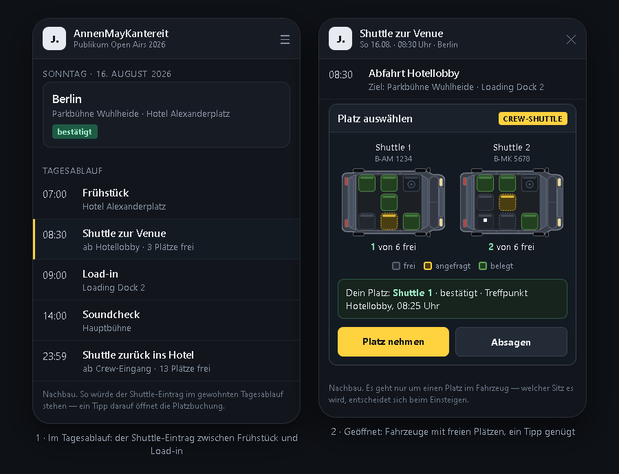

Ein kleines Werkzeug für die tägliche Frage „Wer fährt wann mit welchem Van?“ — bedient aus der WhatsApp-Gruppe heraus, geplant vom Tourmanagement.
Vorführstand · August 2026 · Beispiel: AnnenMayKantereit, Publikum Open Airs 2026
Das Fahrzeug von oben, das Dach ist weg, man sieht auf einen Blick, wie viele Plätze frei sind. Freien Platz antippen, fertig. Welcher Sitz es genau wird, spielt keine Rolle.
Sechs Fahrzeugtypen: vom Kombi mit fünf Sitzen bis zum Minibus mit sechzehn.

WhatsApp lässt kein Werkzeug von außen in eine Gruppe schreiben — deshalb baut das Werkzeug die fertige Nachricht, und der Admin fügt sie mit einem Klick ein.
Darin stehen Zeiten, Fahrzeuge mit Kennzeichen, freie Plätze, Treffpunkt und der Link zum Einbuchen.
Wer nicht klicken mag, sieht den Sitzplan auch als Bild.

Link antippen, freien Platz antippen, bestätigen. Der eigene Platz ist weiß umrandet, damit man sich sofort wiederfindet.
Unter „Meine Plätze“ steht, wo man überall eingetragen ist und wie lange es noch bis zur Abfahrt ist. Absagen geht mit einem Knopf — dann rückt die Warteliste nach.

Links die ganze Crew nach Gewerken, rechts die Abfahrten mit ihren Plätzen. Platz antippen, Namen doppelt antippen — die Person ist eingeteilt. Am Handy genauso.

Deshalb hängen sie an der Stadt: Name, Telefon, Mietwagenfirma, Fahrzeug — und der Name der Fahrer-WhatsApp-Gruppe, dazu Hotel und Venue.
Die Fahrer bekommen einen eigenen Text: Fahrzeug, Kennzeichen, Zeiten, Treffpunkt, Ziel und Personenzahl. Keinen Buchungslink — buchen sollen sie nicht.

Der fertige Text steht in einem Feld, in dem man einfach weiterschreibt; darunter läuft die Vorschau mit. Was gut ist, wird zur Vorlage — für alle Städte oder nur für eine, für die Crew oder für die Fahrer.
Datum, Uhrzeit, Orte und Link werden beim Speichern automatisch zu Platzhaltern, damit die Vorlage am nächsten Tag wieder passt.
Jede Tour hat ihre eigene Crew, Fahrzeuge, Fahrer und Vorlagen — umschalten dauert einen Klick.

Termine, Städte und die Travel Party stehen schon in J.SHOW. Das Shuttle-Werkzeug holt sie sich von dort und gibt den fertigen Sitzplan zurück — nichts wird zweimal gepflegt.
wichtig In dieser Vorführung ist die Anbindung nachgestellt. Es entsteht keine Verbindung, solange die Freigabe fehlt.

Wer J.SHOW ohnehin offen hat, findet den Shuttle dort, wo er hingehört — zwischen Frühstück und Load-in, mit der Zahl der freien Plätze.
Ein Tipp darauf öffnet die Fahrzeuge mit ihren freien Plätzen. „Platz nehmen“ genügt, der eigene Platz steht danach grün darunter. Absagen geht genauso.
Es geht dabei nur um einen Platz im Fahrzeug — welcher Sitz es wird, entscheidet sich beim Einsteigen.
Nachbau Diese beiden Bilder sind nachgestellt und zeigen, wie die Anbindung aussehen würde. Sie sind kein Bildschirmfoto aus J.SHOW.

Eine Show, drei Abfahrten, die echte Crew-Liste — und danach entscheiden, ob es bleibt. Die Einrichtung dauert eine halbe Stunde, alles Weitere kommt aus der Planung von selbst.
Fragen und Rückmeldungen jederzeit — auch zu Wünschen, die hier noch fehlen.